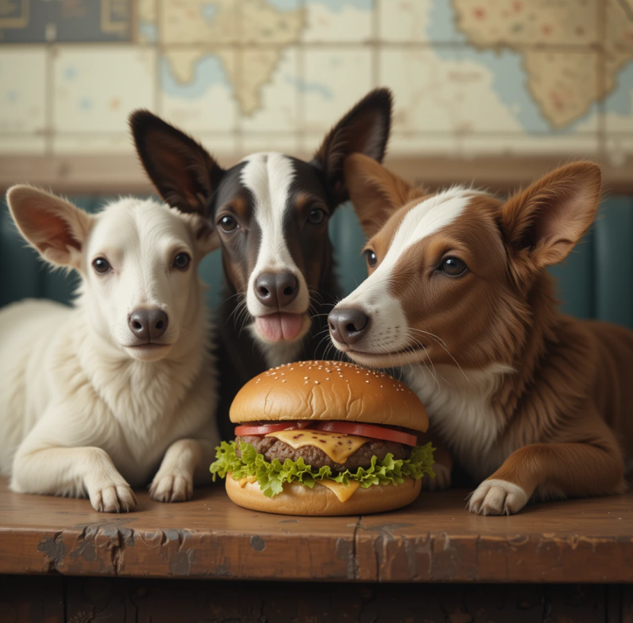

Origen
En los últimos años, el mundo ha cambiado el chip: cuidamos el planeta, comemos más consciente y
buscamos alternativas sabrosas sin renunciar al placer. Así nace la hamburguesa vegana gourmet, una joya
de la cocina contemporánea que demuestra que lo vegetal puede ser brutal.
Con ingredientes naturales, cero sufrimiento animal y sabor que hace que hasta los
carnívoros digan: "¿¡Esto no es carne!?"
Es el plato estrella en restaurantes de comida fusión, food trucks con neón y casas con
batidoras de alto rendimiento.